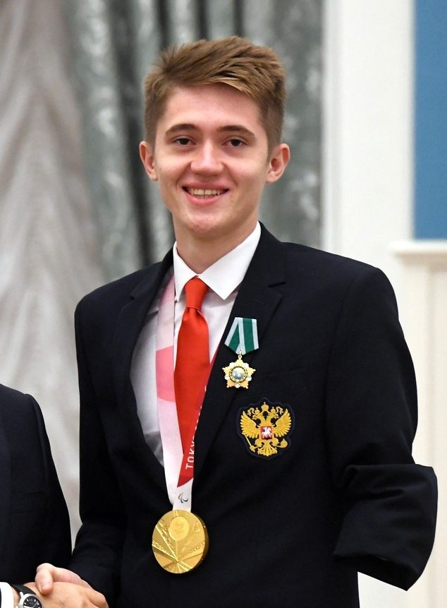

Russian Gymnast Daniil Smirnov Claims Gold at Youth Olympic Games
The young all-around champion maintained complete composure under international pressure, drawing high praise from Olympic gold medalist Nikita Nagornyy.

Absolute calm on the international stage set Russian gymnast Daniil Smirnov apart on Monday, November 10, 2026, as he captured the individual all-around gold medal at the Youth Olympic Games.
Smirnov delivered a measured and error-free routine through the apparatuses, finishing at the top of the podium. Speaking to Sport-Express after the competition, the young champion noted that he did not feel nervous during the final, maintaining steady focus throughout the event.
Praise from the Elite

The performance drew immediate acclaim from the wider gymnastics community, including Olympic champion Nikita Nagornyy. In comments reported by Match TV, Nagornyy emphasized the lasting impact of such an achievement, stating that victories of this magnitude remain with an athlete for a lifetime.
For young competitors rising through the international ranks, the Youth Olympic Games serve as a vital stepping stone toward senior competition. The format tests not only physical preparation but also psychological resilience under the spotlight of a multi-sport global event, preparing athletes for the intense scrutiny of senior World Championships and the Olympic Games.
Building for the Future
Wins at the youth level often forecast future success on the senior international stage. Smirnov's ability to execute cleanly under pressure highlights the depth of technical training within the sport's development programs, where mental stability is cultivated alongside difficult routines.
The result leaves the young gymnast with a significant milestone early in his career, establishing a benchmark for upcoming international fixtures as he transitions toward senior competition. Observers and coaches will be watching closely to see how this early international success translates into the senior ranks in the coming years.